扉页
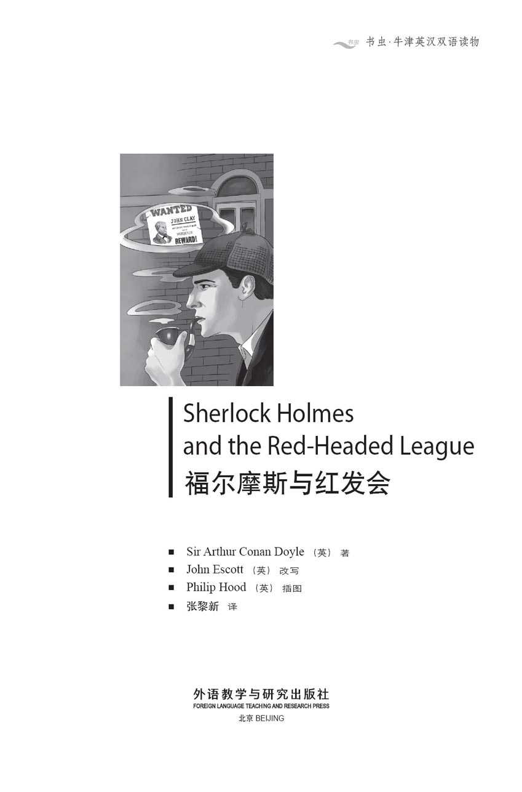
版权页
京权图字：01-2013-7814
Published by arrangement with Oxford University Press for sale in the People's Republic of China only and not for export therefrom. This edition is for sale in the mainland of China only, excluding Hong Kong SAR, Macao SAR and Taiwan.
© Oxford University Press 2008
Oxford is a registered trademark of Oxford University Press
Illustrated by: Philip Hood/Arena
图书在版编目（CIP）数据
福尔摩斯与红发会：英汉对照／（英）柯南·道尔（Conan Doyle, A.）著；（英）埃斯科特（Escott, J.）改写；（英）胡德（Hood, P.）绘；张黎新译．—北京：外语教学与研究出版社，2013.12
（书虫·牛津英汉双语读物）
书名原文：Sherlock Holmes and the Red-Headed League
ISBN 978-7-5135-3929-6
Ⅰ．①福… Ⅱ．①柯… ②埃… ③胡… ④张… Ⅲ．①英语－汉语－对照读物②话剧剧本－作品集－英国－现代 Ⅳ．①H319.4：I
中国版本图书馆CIP数据核字（2013）第309196号
出版人 蔡剑峰
责任编辑 徐传斌
封面设计 蔡 颖
出版发行 外语教学与研究出版社
社 址 北京市西三环北路19号（100089）
网 址 http://www.fltrp.com
版 次 2014年1月第1版
书 号 ISBN 978-7-5135-3929-6
制售盗版必究 举报查实奖励
版权保护举报电话：（010）88817519
内容简介
内容简介
故事发生在十九世纪末，闻名世界的大侦探歇洛克·福尔摩斯住在伦敦贝克街221B号。伦敦这座恢宏帝都阴雨连绵，雾气弥漫，警方在抓捕罪犯方面常常束手无策。幸亏有福尔摩斯假以援手，不过案子也得足够有趣才能吸引他参与。
福尔摩斯足智多谋，但聪明人经常对朋友没什么耐心。“动动脑子，华生！”他会这样不客气地跟那位优秀的医生说话。尽管华生医生没他聪明，反应也不如他快，可有时候他也需要华生医生帮忙，而且他对华生的帮助也心怀感激，尤其是在情势危险的时候。
SHERLOCK HOLMES AND THE REDHEADED LEAGUE
SHERLOCK HOLMES AND THE RED-HEADED LEAGUE
It is the end of the nineteenth century, and Sherlock Holmes, the world-famous detective, lives at 221B Baker Street in London. The great capital is a rainy, foggy city, where the police often have difficulty in catching criminals. Luckily, Holmes is there to help them, but only if a case is interesting enough.
Holmes is extremely intelligent, and intelligent people are often impatient with their friends. 'Think, Watson!' he says sharply to the good doctor, who is not as clever or as quick as he is. But he sometimes needs Dr Watson's help, and is grateful for it, especially in a dangerous situation.
目录
The Red-Headed League
The Red-Headed League
INTRODUCTION
A strange advertisement in a newspaper is the beginning of an even stranger adventure for Sherlock Holmes and Dr Watson.
CHARACTERS IN THE PLAY
Sherlock Holmes, the famous detective
Doctor Watson, his friend and assistant
Jabez Wilson, a red-haired shopkeeper
Vincent Spaulding, Mr Wilson's assistant
Duncan Ross, a man with red hair
Mr Jones, a detective from Scotland Yard
Mr Merryweather, a bank manager
(Jabez Wilson and Duncan Ross both have red hair)
PERFORMANCE NOTES
Scene 1: Inside Wilson's shop, a room with a table and two chairs.
Scene 2: An office, with a table and two chairs.
Scene 3: Sherlock Holmes's room, with two chairs.
Scene 4: Outside the shop in Saxe-Coburg Square.
Scene 5: Sherlock Holmes's room.
Scene 6: The strong-room at the bank, with boxes in it.
Scene 7: Sherlock Holmes's room.
You will need a pipe, a newspaper, a walking stick, coats, hats, pens, paper, a large book, a light to carry, and two guns.
SCENE 1
An interesting advertisement
The inside of Wilson's shop. It's a little shop, with a lot of clocks, pictures, watches, etc. Wilson is writing at a table. Vincent Spaulding is looking at The Morning Chronicle newspaper.
SPAULDING
This is interesting.
WILSON
What is?
SPAULDING
This advertisement. It is interesting for you, Mr Wilson, because you have red hair.
WILSON
(Look at Spaulding) Go on.
SPAULDING
The Red-Headed League want to find someone new. Do you know about them? Listen. (Reading from newspaper) 'To all red-headed men, twenty-one years old or more – the Red-Headed League can now take a new man. We pay four pounds a week to do easy work. Come to the League offices at 7, Pope's Court, Fleet Street, London on Monday at 11 o'clock.' (To Wilson) You can get two hundred pounds a year!
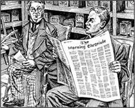
'Do you know about them?'
WILSON
Really? Tell me more about it.
SPAULDING
A rich American with red hair began the League. When he died, he gave a lot of his money to the Red-Headed League, to give easy work to men with red hair. It's very good wages for only a little work. Why don't you go along to Pope's Court?
WILSON
But millions of red-headed men will go, and—
SPAULDING
Not millions. You need to live in London.
WILSON
I don't know...
SPAULDING
And you must have very red hair. You have very red hair, Mr Wilson.
WILSON
Monday... eleven o'clock...?
SPAULDING
It's Monday today. And it's nearly eleven o'clock! Come on!
SCENE 2
Some easy work for Wilson
The office at Pope's Court – a room with only a table and two chairs. Duncan Ross, a man with very red hair, is sitting behind the table. We can hear the noise of a lot of people out in the street.
ROSS
Next!
The door opens and Spaulding and Wilson come in. Ross looks at Wilson and gets excited.
SPAULDING
This is Mr Jabez Wilson, and he wants to be in the League. (Ross gets up and walks past the table to meet them.)
ROSS
And he has a good head of hair. I can't remember when I saw a better head! (He suddenly puts out a hand and pulls Wilson's hair.)
WILSON
Aaghh! Stop it!
ROSS
I'm sorry, but we must be careful. Of course it is your hair. I can see that now. Please sit down.
Ross sits in the chair behind the table again.
Wilson sits in the other chair. Spaulding stands behind him.
ROSS
My name is Duncan Ross. Have you got a wife, Mr Wilson? And children?
WILSON
No, I have no wife and no family.
ROSS
Oh dear! Some of the men in our League have lots of red-headed children. We like that.
WILSON
I'm sorry, but I—
ROSS
It's all right. You have that wonderful head of hair. When can you begin work here?
WILSON
It's not easy. I have a shop, and—
SPAULDING
I can stay in the shop, Mr Wilson.
WILSON
What hours must I work?
ROSS
Ten o'clock to two o'clock.
WILSON
And the wage?
ROSS
Four pounds a week.
WILSON
What must I do?
ROSS
You must work here, in the office, all the time. That is very important. You cannot go out between the hours of ten o'clock and two o'clock.
WILSON
And the work?
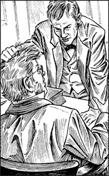
Ross suddenly pulls Wilson's hair.
ROSS
You must copy from this large book, and you must bring paper and a pen. Can you begin tomorrow?
WILSON
Yes, I can.
ROSS
(Smiling) Then goodbye, Mr Jabez Wilson.
Wilson and Spaulding leave the office.
SCENE 3
Wilson tells his story
Sherlock Holmes's room. Holmes and Wilson are sitting in chairs. Holmes is smoking his pipe. Wilson has The Morning Chronicle in his hands.
HOLMES
Most interesting, Mr Wilson. Most interesting.
The door opens and Watson comes in.
WATSON
Holmes, I'm sorry! I didn't know—
HOLMES
Come in, my dear Watson! This is Mr Jabez Wilson. He is telling me a very strange story. (To Wilson) This is Doctor Watson. He's a good friend. Give him the advertisement to read.
Wilson gives the newspaper to Watson.
HOLMES
He does a lot of writing, Watson. Do you see?
WILSON
Oh! How did you know that, Mr Holmes?
HOLMES
The right arm of your coat is different from the left. Your arm is on the table when you write.
WILSON
(Laughing) Yes, that's right!
WATSON
(Finishes reading and looks at Holmes.) It's very strange, Holmes.
HOLMES
(Looking excited) It is strange, isn't it? Do you see the day and month of the newspaper?
WATSON
It's the Morning Chronicle of 27th April, 1890. Two months ago.
HOLMES
Now, Mr Wilson, tell us about your shop.
WILSON
It's in Saxe-Coburg Square, Mr Homes. It's a little shop, and it doesn't make much money.
HOLMES
Does somebody help you in the shop?
WILSON
Yes, a young man. Well, he's not very young, but he works for half-wages.
HOLMES
Does he! What's his name?
WILSON
Vincent Spaulding. He's very good at his work. He likes to take photographs when he's not working. And he makes the pictures in my dark cellar. But he works well when he's in the shop.
HOLMES
How did you first see the newspaper advertisement? Tell us that.
WILSON
Spaulding saw it, eight weeks ago, and we went to Pope's Court and saw Mr Duncan Ross. I told you about the visit a few minutes ago...
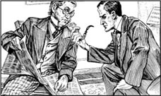
'Most interesting, Mr Wilson.'
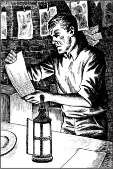
'He makes the pictures in my dark cellar.'
HOLMES
Yes, yes. And I can tell Watson about it later. What happened next?
WILSON
Well, I was very pleased, Mr Holmes. I went home feeling very happy. But that evening I began to think again. 'Copying from a book is strange work for a man to do,' I thought.
WATSON
Very strange, yes.
WILSON
But the next morning I went to Pope's Court with my pen and some paper. Mr Ross was there, but he soon went away, and I began my work.
HOLMES
Well?
WILSON
I went in every morning at ten o'clock, and went home at two. And on Saturday, Ross was in the office again, and gave me my four pounds.
HOLMES
How long did you work there?
WILSON
Eight weeks. But today I went to the office at ten o'clock, and the door was locked. (He takes a paper from his coat and gives it to Holmes.) This was on the door.
HOLMES
(Reading) 'The Red-Headed League is finished. June 23rd, 1890.' Then what did you do?
WILSON
I went to the office in the next building, and I asked the man, 'What happened to the Red-Headed League?' 'Who are they?' he asked. 'Who is the man at number 7?' I asked. 'The man with the red hair?' he said. 'His name is William Morris. He moved out yesterday. He has new offices at 17 King Edward Street.' Well, I went to King Edward Street, Mr Holmes.
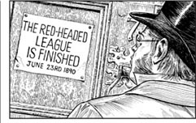
HOLMES
You did not find a Mr William Morris or a Mr Duncan Ross. Am I right?
WILSON
You are!
HOLMES
What did you do then?
WILSON
I went home to Saxe-Coburg Square.
HOLMES
What does Spaulding say about all this?
WILSON
He says, 'Wait for a letter. You're going to hear something.'
HOLMES
What do you think?
WILSON
I need your help, I think.
HOLMES
You are right, Mr Wilson. I am happy to help you. But first I want to ask you one or two questions. Mr Spaulding was the first to see the advertisement. Yes?
WILSON
Yes.
HOLMES
When did he begin to work for you?
WILSON
About three months ago.
HOLMES
How did he come?
WILSON
He answered an advertisement in the newspaper.
HOLMES
Was he the only man to answer it?
WILSON
No, twelve people answered it.
HOLMES
Why did you take him?
WILSON
Because he was cheap.
HOLMES
He is happy to work for half the usual wages.
WILSON
Yes.
HOLMES
Tell me about him, this Vincent Spaulding.
WILSON
He's small, and a good, quick worker. He's about thirty years old, I think.
HOLMES
Where is he now?
WILSON
He's at the shop.
HOLMES
That is all, Mr Wilson. Today is Saturday. I am going to have an answer for you before Monday.
WILSON
Thank you, Mr Holmes.
Watson goes out with Wilson. Holmes walks up and down, thinking. A minute later, Watson comes back.
HOLMES
We must work quickly, Watson. Put on your hat. We're going to Saxe-Coburg Square.
SCENE 4
Holmes meets Spaulding
Outside the shop in Saxe-Coburg Square. Holmes is walking up and down. Now and then he hits the ground outside the shop with his walking stick. Then he hits the door of the shop. Spaulding opens the shop door and looks out. The legs of his trousers are dirty.
SPAULDING
Can I help you?
HOLMES
Yes. How can I get to the Strand?
SPAULDING
Third on the right, and fourth on the left.
He gets back into the shop and closes the door.
HOLMES
He's a clever young man, Watson.
WATSON
He is? Why did you ask about the Strand? You know London very well! You wanted to see him.
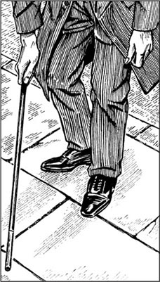
Holmes hits the ground outside the shop with his walking stick.
HOLMES
Not him. His trousers.
WATSON
His trousers? I don't understand. And why did you hit the ground with your stick?
HOLMES
My dear Doctor, this is not the time for talking. I must go and look at the roads behind Saxe-Coburg Square. Are you going to your work?
WATSON
Yes, I must go to the hospital.
HOLMES
I have things to do too. But I want your help tonight. Come at 10 o'clock. And Watson—
WATSON
Yes, Holmes?
HOLMES
Bring your gun.
SCENE 5
To catch a thief
Sherlock Holmes's room. Holmes, Jones and Merryweather are talking quietly. Watson comes in.
HOLMES
Watson, you know Mr Jones of Scotland Yard. And this is Mr Merryweather. They're coming with us tonight.
JONES
Hello, Doctor. We meet again. I'm here because I want to catch John Clay. He's a killer and a thief, one of the worst men in London. It isn't going to be easy to catch him, because he's very clever.
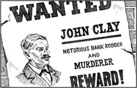
'He's a killer and a thief.'
HOLMES
It's after ten o'clock. We must go.
They all leave the room.
SCENE 6
Watching and waiting
Inside the bank strong-room. There are boxes on the floor. It is dark. The door opens and Holmes comes in, carrying a light. Watson, Jones and Merryweather come after him. Holmes looks carefully at the floor. Merryweather sits on a box and hits the floor with his foot.
MERRYWEATHER
How do you know—?
HOLMES
Please, no noise! Perhaps they can hear us!
JONES
How long before—?
HOLMES
An hour. They are going to wait for Mr Wilson to go to bed, then work quickly, I think. (To Watson) We're in the strong-room of the First Bank. Did you know that? Mr Merryweather works for the bank. Tell Watson, Mr Merryweather. What do the thieves want?
MERRYWEATHER
Our gold. It's in all these boxes. Lots and lots of it!
WATSON
Gold!
HOLMES
We must wait in the dark. Get behind the boxes, everyone. Things are going to happen in the next hour, I think. When I hear or see anything strange, I'm going to come out quickly with a light, and then you must help me. Be ready with your gun, Watson. Is everything ready upstairs, Mr Jones?
JONES
My men are waiting at the front door of the bank, Holmes. They can't get out there.
HOLMES
Good. Now we must be quiet and wait.
He puts out the light. The strong-room is dark, but we can see the men waiting behind the boxes. Nothing happens. Watson looks at his watch.
WATSON
(Quietly) It's 11.15, Holmes. When—?
HOLMES
Sahh!
They are all quiet for nearly a minute. Then we see a light coming through the floor. Suddenly the ground opens. First a hand with a gun comes out, and then Spaulding puts his other hand out. We watch him and Ross come out.
SPAULDING
(To Ross) Now, have you got—?
With his light, Holmes comes out from behind his box, and catches Spaulding.
SPAULDING
What—!
Ross quickly gets back into the tunnel. Jones wants to stop him, but he cannot. Holmes hits Spaulding's arm. Now the gun is on the ground.
HOLMES
You can't get away, John Clay!
SPAULDING
No. But my friend—
HOLMES
There are three men waiting for him at the front door of the bank.
SPAULDING
You think of everything, Mr Holmes. You're very clever.
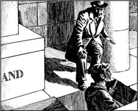
Holmes comes out from behind his box...
HOLMES
Your Red-Headed League was clever, too. But I am pleased to catch the famous John Clay!
SCENE 7
Holmes and Watson
Sherlock Holmes's room. Holmes and Watson are sitting in chairs. Holmes is smoking his pipe.
HOLMES
They needed the Red-Headed League to get Mr Wilson out of his shop. Do you understand that?
WATSON
Yes. I think – er – yes.
HOLMES
They wanted Wilson away from the shop for some hours every day. But how could they do it? Then Clay saw the colour of Ross's hair – and thought of a 'Red-Headed League'! When Wilson answered their newspaper advertisement, he went to work in their office every day. Then they had time to make their tunnel. Very clever!
WATSON
So Spaulding is John Clay, the famous thief. When did you first know that?
HOLMES
Spaulding was happy to work for half-wages. 'Why?' I thought. Spaulding often went down to the cellar. 'What's he doing down there?' I thought. Suddenly, I thought about tunnels! 'Is Spaulding making a tunnel?' I thought. 'To another building?' Watson, you saw me hitting the ground with my stick, outside the shop.

... and catches Spaulding.
WATSON
Yes... now I understand. Was the cellar in front of the shop? You wanted to know that.
HOLMES
Yes, I did. And it wasn't. The cellar was behind the shop. Then I saw the man 'Spaulding'. Did you see his trousers?
WATSON
Er – yes, I saw them.
HOLMES
They were dirty, Watson! Why? Because making a tunnel is dirty work!
WATSON
Very clever, Holmes!
HOLMES
Then I went into the next street, at the back of the shop. And what did I see? The First Bank!
WATSON
The bank, yes! Of course.
HOLMES
'Why is that young man making a tunnel?' I thought. 'To get into the bank strong-room!'
WATSON
But why tonight? How did you know—?
HOLMES
Because they closed the offices of the Red-Headed League. 'The tunnel must be ready,' I thought. And Saturday is a good day. The bank does not open on Sunday. Two days for the thieves to get away.
WATSON
(Laughing) But they didn't get away, Holmes. You're very clever.
HOLMES
(Not laughing) That's very true, Watson.
advertisement n. a notice in a newspaper to tell you about something(e. g. a job) 广告
wages n. the money someone pays you for doing a job 工资，工钱
copy v. write or draw something to look like another thing 抄写
strange adj. surprising or not usual 奇怪的
lock v. (locked adj.) close something with a key 锁上
thief n. (thieves plural) someone who steals things from another person or place 小偷
strong-room n. an underground room in a bank where money and gold are kept safely 保险库
tunnel n. an underground way from one place to another 地道
红发会
红发会
内容简介
报上刊载的一则奇怪的广告，引发了福尔摩斯和华生医生一场比广告更为奇异的冒险。
剧中人物
歇洛克·福尔摩斯——知名侦探
华生医生——福尔摩斯的朋友兼助手
杰贝兹·威尔逊——一位红头发的店铺老板
文森特·斯波尔丁——威尔逊先生的店员
邓肯·罗斯——红发男子
琼斯先生——苏格兰场的探员
梅里韦瑟先生——银行经理
（杰贝兹·威尔逊和邓肯·罗斯都满头红发）
表演须知
第一场：威尔逊先生的店铺，房间里有一张桌子和两把椅子。
第二场：一间办公室，摆有一张桌子和两把椅子。
第三场：歇洛克·福尔摩斯的房间，摆有两把椅子。
第四场：萨克森-科堡广场的店铺外。
第五场：歇洛克·福尔摩斯的房间。
第六场：银行的保险库，里面有一些箱子。
第七场：歇洛克·福尔摩斯的房间。
需要的道具：一个烟斗、一份报纸、一根手杖、几件大衣、几顶礼帽、几支笔、纸、一本厚书、一盏提灯和两把手枪。
第一场
一则有趣的广告
威尔逊的店铺里。这是家小店铺，摆着钟表、绘画和手表之类的东西。威尔逊正坐在桌前写东西。文森特·斯波尔丁在看《纪事晨报》。
斯波尔丁：
这个有点儿意思。
威尔逊：
是什么？
斯波尔丁：
这则广告。威尔逊先生您应该会对广告感兴趣，因为您长着红头发。
威尔逊：
（看着斯波尔丁）说下去。
斯波尔丁：
红发会在征寻新会员。你听说过这家协会吗？听着啊。（念报纸）“致所有年满二十一岁的红发男性——红发会目前欲征觅新会员一人。周薪四镑，工作轻松。有意者请于周一上午十一点前往伦敦舰队街波普斯巷7号红发会办公室应征。”（对威尔逊说）你一年可以挣二百镑呢！
威尔逊：
真的吗？给我讲讲这家协会的事。
斯波尔丁：
美国一个红头发阔佬创建了这个协会。他去世时留了很多钱给红发会，用于向红头发的男人提供轻松的工作。给的钱很多，要做的事却很少。你干吗不去波普斯巷试试呢？
威尔逊：
可是肯定得有几百万红头发的男人去吧，而且——
斯波尔丁：
没有几百万那么多。应征者得住在伦敦。
威尔逊：
很难说……
斯波尔丁：
而且头发必须非常红才行。您的头发就非常红啊，威尔逊先生。
威尔逊：
星期一……十一点……？
斯波尔丁：
今天就是星期一啊，而且快到十一点了！走吧！
第二场
威尔逊的好差事
位于波普斯巷的办公室——房间里只摆着一张桌子和两把椅子。邓肯·罗斯，一位头发鲜红的男子，坐在桌子后面。观众可以听到外面街上人声鼎沸。
罗斯：
下一个！
门开了，斯波尔丁和威尔逊走了进来。罗斯看了威尔逊一眼，一下子兴奋起来。
斯波尔丁：
这位是杰贝兹·威尔逊先生，他想加入贵协会。（罗斯站起来，走过桌子迎接他们。）
罗斯：
他的头发可真不错。我还真没见过这么漂亮的红头发呢！（他突然伸出一只手揪住了威尔逊的头发。）
威尔逊：
啊——！住手！
罗斯：
很抱歉，但是我们必须得谨慎从事。这确实是您自己的头发，我现在可以确定了。请坐。
罗斯重新坐回桌子后面。
威尔逊坐在另一把椅子上，斯波尔丁站在他身后。
罗斯：
我叫邓肯·罗斯。你结婚了吗，威尔逊先生？有孩子吗？
威尔逊：
没有，我没有娶妻成家。
罗斯：
天哪！我们协会里有些人生了一大堆红头发的孩子。我们喜欢这样。
威尔逊：
很抱歉，可我——
罗斯：
没关系。你有一头漂亮的头发。你什么时候可以来这儿上班？
威尔逊：
这可不太好办。我自己有家店，而且——
斯波尔丁：
我可以留在店里照应，威尔逊先生。
威尔逊：
我的上班时间是怎样的呢？
罗斯：
早上十点到下午两点。
威尔逊：
薪酬呢？
罗斯：
一周四镑。
威尔逊：
做些什么呢？
罗斯：
你必须来这里上班，一直待在办公室里。这很重要。上午十点到下午两点之间你不可以溜号儿。
威尔逊：
工作内容呢？
罗斯：
你要照着这本厚厚的书抄写，还要自己带纸和笔来。你明天能开始上班吗？
威尔逊：
是的，可以。
罗斯：
（微笑着）那么再见吧，杰贝兹·威尔逊先生。
威尔逊和斯波尔丁离开了办公室。
第三场
威尔逊自述
歇洛克·福尔摩斯的房间。福尔摩斯和威尔逊坐在椅子上。福尔摩斯抽着烟斗，威尔逊手上拿着《纪事晨报》。
福尔摩斯：
非常有意思，威尔逊先生。非常有意思。
门开了，华生走了进来。
华生：
福尔摩斯，不好意思！我不知道——
福尔摩斯：
进来吧，亲爱的华生！这位是杰贝兹·威尔逊先生。他正跟我讲一个奇特的故事。（对威尔逊）这位是华生医生，我的好朋友。把那则广告给他看看。
威尔逊把报纸递给了华生。
福尔摩斯：
他做了不少抄写的工作，华生。你看出来了吗？
威尔逊：
啊！您怎么知道的，福尔摩斯先生？
福尔摩斯：
你大衣右边的袖子跟左边的不一样。你写字的时候胳膊是放在桌子上的呀。
威尔逊：
（大笑）是啊，正是这样！
华生：
（读完报纸，看着福尔摩斯）这非常奇怪啊，福尔摩斯。
福尔摩斯：
（看起来很兴奋）确实奇怪，是吧？你留意报纸的日期了吗？
华生：
这是1890年4月27日的《纪事晨报》。两个月以前的。
福尔摩斯：
那么，威尔逊先生，给我们讲讲你店里的情况吧。
威尔逊：
我的店在萨克森-科堡广场，福尔摩斯先生。店不大，也不怎么挣钱。
福尔摩斯：
店里有什么帮手吗？
威尔逊：
有，是一个小伙子。噢，他其实也不太年轻了，不过他只要一半的薪水。
福尔摩斯：
是吗！他叫什么名字？
威尔逊：
文森特·斯波尔丁。他活儿干得不错。不干活儿的时候他喜欢拍照片。他在我那黑咕隆咚的地窖里冲洗照片。不过，他在店里上班的时候表现都很好。
福尔摩斯：
你最先是怎么看到报上的广告的？跟我们说说。
威尔逊：
是斯波尔丁看到的，就在八个星期之前，后来我们就去波普斯巷见了邓肯·罗斯先生。刚才我跟您讲了见面的情况……
福尔摩斯：
是的，是的，我稍后告诉华生。后来又发生了什么？
威尔逊：
哦，我当时非常开心，福尔摩斯先生。我满心欢喜地回了家。可是那天晚上我回头重新琢磨了这件事。“对一个男人来说，抄书实在是一份古怪的工作。”我心想。
华生：
确实非常奇怪，没错。
威尔逊：
但是第二天我还是带着纸笔去了波普斯巷。罗斯先生在那儿，但他不久就离开了，我便开始干我的活儿。
福尔摩斯：
后来呢？
威尔逊：
我每天早上十点去，下午两点回家。到了周六，罗斯又回到办公室来，付给我四英镑。
福尔摩斯：
你在那里工作了多久？
威尔逊：
八个星期。但是今天上午十点我去办公室的时候，门上了锁。（他从大衣里掏出一张纸递给福尔摩斯。）这个贴在门上。
福尔摩斯：
（念）“红发会业已解散。1890年6月23日。”后来你做了什么呢？
威尔逊：
我去了隔壁大楼的办公室，问那里的人：“红发会出了什么事？”“谁是红发会？”“7号房间的那个人是谁？”我问。“那个红头发的男人吗？”他说，“他叫威廉·莫里斯，昨天搬走了。他在爱德华国王大街17号有新的办公室了。”于是，我就去了爱德华国王大街，福尔摩斯先生。
福尔摩斯：
你既没有找到威廉·莫里斯先生，也没有找到邓肯·罗斯先生。我说得对吗？
威尔逊：
说得没错！
福尔摩斯：
后来你又做了什么呢？
威尔逊：
我回到萨克森-科堡广场的家。
福尔摩斯：
斯波尔丁怎么评价这事？
威尔逊：
他说：“等等看有没有信来。您会听到消息的。”
福尔摩斯：
你怎么想呢？
威尔逊：
我觉得我需要您帮帮我。
福尔摩斯：
说得对，威尔逊先生。我很乐意帮你。但是我得先问你一两个问题。是斯波尔丁最先看到广告的，对吧？
威尔逊：
对。
福尔摩斯：
他是什么时候开始为你工作的呢？
威尔逊：
大概三个月前。
福尔摩斯：
他是怎么来的？
威尔逊：
他是看到我在报纸上登的广告后来应征的。
福尔摩斯：
只有他一个来应征吗？
威尔逊：
不是，有十二个人来。
福尔摩斯：
你为什么选他呢？
威尔逊：
因为他要价便宜。
福尔摩斯：
他乐意只拿一半的工资。
威尔逊：
是的。
福尔摩斯：
跟我说说这个文森特·斯波尔丁吧。
威尔逊：
他个子不大，干活不错，手脚麻利。我觉得他大概有三十岁上下。
福尔摩斯：
他现在在哪儿呢？
威尔逊：
在店里。
福尔摩斯：
我问完了，威尔逊先生。今天是周六，我周一之前应该能给你一个答复。
威尔逊：
谢谢您，福尔摩斯先生。
华生陪威尔逊走了出去。福尔摩斯踱来踱去，陷入深思。没一会儿，华生回来了。
福尔摩斯：
我们得赶快行动，华生。戴上帽子，我们去萨克森-科堡广场。
第四场
福尔摩斯见到了斯波尔丁
萨克森-科堡广场的店铺外，福尔摩斯走来走去，不时用手杖敲打店铺外的地面。之后他敲了敲店门。斯波尔丁打开门向外张望，他的裤腿脏了。
斯波尔丁：
有事吗？
福尔摩斯：
哦，请问到斯特兰德大街怎么走？
斯波尔丁：
第三个路口右转，然后第四个路口左转。
他回到店里关上了门。
福尔摩斯：
他是个聪明的年轻人，华生。
华生：
是吗？你为什么要问斯特兰德大街怎么走呢？你对伦敦很熟悉呀！你是想见见他吧。
福尔摩斯：
不是见他，是看看他的裤子。
华生：
裤子？我不明白。还有，你为什么要用手杖敲打地面呢？
福尔摩斯：
我亲爱的医生，现在不是聊天的时候。我得去看看萨克森-科堡广场后面的街道。你要去工作了吗？
华生：
是的，我得去医院了。
福尔摩斯：
我也有事要去忙了。不过今晚我需要你帮忙，十点来吧。对了，华生——
华生：
什么事，福尔摩斯？
福尔摩斯：
带上你的枪来。
第五场
抓贼
歇洛克·福尔摩斯的房间。福尔摩斯、琼斯和梅里韦瑟正小声交谈。华生进来了。
福尔摩斯：
华生，你认识苏格兰场的琼斯先生吧。这位是梅里韦瑟先生。他们今晚要跟我们一起行动。
琼斯：
你好，医生，又见面了。我今天来是为了抓约翰·克莱，他是杀人犯，又是窃贼，算得上伦敦最坏的人之一。要抓住他可不容易，这家伙很聪明。
福尔摩斯：
十点多了，我们得动手了。
他们一起离开了房间。
第六场
静观其变
银行的保险库里，地上堆着些箱子，光线昏暗。门开了，福尔摩斯提着一盏灯走进来，华生、琼斯和梅里韦瑟跟在身后。福尔摩斯仔细地察看地面，梅里韦瑟坐在一个箱子上用脚敲打着地面。
梅里韦瑟：
您怎么知道——
福尔摩斯：
请别出声！他们可能会听到我们说话！
琼斯：
还要多久才——
福尔摩斯：
一个小时。我想，他们得等到威尔逊先生上床睡觉以后才会迅速动手。（对华生）现在我们在第一银行的保险库里。你之前知道吗？梅里韦瑟先生在这家银行工作。告诉华生，梅里韦瑟先生，这些窃贼想偷什么？
梅里韦瑟：
我们的金子。所有的箱子里都是——大把大把的金子。
华生：
金子！
福尔摩斯：
我们必须在黑暗中等待。大家藏到那些箱子后面去，我估计一个小时内就会出现情况了。一旦我听到或者发现什么异常的状况，就会拿着灯迅速冲出去，接下来你们必须给我帮把手。把枪准备好，华生。楼上一切就绪了吗，琼斯先生？
琼斯：
我的手下在银行前门守着呢，福尔摩斯。他们不可能从那里逃出去。
福尔摩斯：
好。现在我们必须安静地等待。
福尔摩斯把灯熄灭。保险库里一片昏暗，但是箱子后面躲着的人依稀可见。什么动静也没有。华生看了看手表。
华生：
（小声地说）十一点一刻了，福尔摩斯。什么时候——
福尔摩斯：
嘘！
他们安静了不到一分钟，一道光就从地下透出来。突然，地板翻开了。先是伸出来一只拿枪的手，接着斯波尔丁把另外一只手也伸出来。他和罗斯爬了出来。
斯波尔丁：
（对罗斯）哎，你有——
福尔摩斯提着灯从藏身的箱子后面跳出来抓住了斯波尔丁。
斯波尔丁：
什么——！
罗斯飞快地逃回地道。琼斯试图阻拦他，却没能成功。福尔摩斯击打斯波尔丁的手臂，把枪打落到了地上。
福尔摩斯：
你跑不了的，约翰·克莱！
斯波尔丁：
我是跑不了，可我的朋友——
福尔摩斯：
银行前门有三个人等着他呢。
斯波尔丁：
你把一切都考虑到了，福尔摩斯先生。你非常有头脑。
福尔摩斯：
你那红发会的主意也很高明。不过，能抓住大名鼎鼎的约翰·克莱我很高兴！
第七场
福尔摩斯和华生
歇洛克·福尔摩斯的房间。福尔摩斯和华生坐在椅子上，福尔摩斯抽着烟斗。
福尔摩斯：
他们需要利用红发会让威尔逊先生离开店铺。你明白了吧？
华生：
是的，我想——哦——是的。
福尔摩斯：
他们希望威尔逊先生每天都能离开店铺几个小时，但是他们怎么才能做到呢？这时克莱注意到罗斯的发色——于是想出了“红发会”这个主意！威尔逊应征了他们在报上登的广告后，每天都去他们的办公室上班，这样他们就有时间挖地道了。真是聪明啊！
华生：
那么斯波尔丁就是大盗约翰·克莱啦。你最早什么时候知道这个的？
福尔摩斯：
斯波尔丁愿意拿一半的薪水干活儿。“为什么呢？”我想。斯波尔丁经常到地窖去。“他在那儿干什么呢？”我想。突然，我想到了地道！“斯波尔丁是不是在挖地道呢？”我想，“挖到另外一座建筑物里去？”华生，你看到我用手杖敲打店铺外面的地面来着。
华生：
是的……现在我明白了。地窖是在店铺的前面吗？你是想弄清楚这一点吧。
福尔摩斯：
是的。地窖并不在前面，而是在店铺后面。然后我见到了“斯波尔丁”其人。你注意到他的裤子了吗？
华生：
嗯——是的，我注意到了。
福尔摩斯：
裤子脏兮兮的，华生！为什么？因为挖地道就是个脏活儿啊！
华生：
真聪明啊，福尔摩斯！
福尔摩斯：
然后我去了店铺后面的那条街。我看到了什么呢？第一银行！
华生：
银行，是啊！那当然了。
福尔摩斯：
那个年轻人为什么要挖地道？”我想，“是为了进入银行的保险库！”
华生：
可为什么就在今晚呢？你怎么知道——？
福尔摩斯：
因为他们把红发会的办公室给关了。“地道一定是挖好了。”我想。而且周六是个好日子，银行周日不营业，有两天时间让这些贼逃跑。
华生：
（大笑）可他们没跑成啊，福尔摩斯。你真是聪明！
福尔摩斯：
（没有笑）这是句大实话，华生。
The Three Students
The Three Students
INTRODUCTION
Students at a college are going to take an examination very soon. But have any of them already seen the questions?
CHARACTERS IN THE PLAY
Sherlock Holmes
Doctor Watson
Hilton Soames, a teacher at St Luke's College
Bannister, a servant at the college
Gilchrist, a student
Daulat Ras, a student
Miles McLaren, a student
PERFORMANCE NOTES
Scene 1: A room with a table and chairs.
Scene 2: Soames's living room, with a writing table and chairs. There is a small table near the window. A door leads into his bedroom; a long curtain hangs near the bed.
Scene 3: Soames's living room.
Scene 4: Outside the door of Gilchrist's room.
Scene 5: Daulat Ras's room.
Scene 6: Outside the door of Miles McLaren's room.
Scene 7: The same room as Scene 1.
Scene 8: Soames's living room.
You will need a pipe, books, pens, papers, examination papers, three pieces of 'mud', pencil cuttings, and a letter.
SCENE 1
Hilton Soames's story
Sherlock Holmes is sitting at a table, writing. It is evening. Watson comes in with Hilton Soames.
HOLMES
(Not looking up) Who was at the door, Watson?
WATSON
This is Mr Hilton Soames, Holmes. He teaches at St Luke's College. (Holmes looks up.)
SOAMES
Can you give me some of your time, Mr Holmes? Today something happened at the college, and I was very worried. Then I thought, 'The famous detective, Sherlock Holmes, is visiting our town. Perhaps he can help!' And I—
HOLMES
I have a lot of work to do, Mr Soames. Perhaps the police—
SOAMES
No, no, I can't go to the police!
HOLMES
Well, tell me your story, Mr Soames.
Watson sits down, but Soames stays standing.
SOAMES
Tomorrow is the first day of an important examination, and I'm one of the examiners. Today, at three o'clock, the three exam papers arrived for me to read. Of course, every student would like to see these papers before the exam!
HOLMES
(Laughing) Of course!
SOAMES
We are always very careful with them. I began to read them, but at 4.30 p.m. I went out to have tea in a friend's rooms.
HOLMES
Where did you leave the papers?
SOAMES
They were on my writing table. I locked my door, and was away for an hour. When I arrived home, I saw a key in my door. 'Is it my key?' I thought.'No, that's in my pocket. Ah, it's Bannister's key.' Bannister is my servant.
WATSON
Why did he go to your room this afternoon?
SOAMES
He brings my tea in every afternoon.
HOLMES
But you were at your friend's rooms. Did he forget that?
SOAMES
Yes. And so his key was in my door. He is usually careful, but—
HOLMES
Tell me about the examination papers. Where were they when you went back to your room?
SOAMES
One was on a small table next to the window, one was on the floor, and one on my writing table.
HOLMES
(Suddenly looking interested) The first paper on the floor, the second in the window, and the third on the writing table.
SOAMES
(Opening his mouth suddenly) Yes! How did you know that?
HOLMES
(Smiling) Please, tell us more of your very interesting story, Mr Soames.
SOAMES
First, I thought, 'Did Bannister look at the papers?' So I asked him, but he said, 'No, I did not.' And he is an honest man, Mr Holmes.
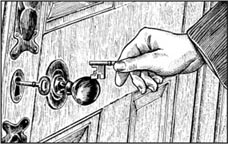
'When I arrived home, I saw a key in my door.'
HOLMES
What happened next?
SOAMES
Bannister suddenly began to feel ill when I told him about the papers. He sat down on a chair and I gave him a strong drink. Then I looked carefully at the table next to the window.
WATSON
What did you find?
SOAMES
Small pieces of pencil.
HOLMES
Did somebody break and sharpen a pencil?
SOAMES
Yes, perhaps. Yes, that was it.
HOLMES
Good! That helps us!
SOAMES
Two more things. I have a new writing table, but now there's a little cut on it. And there was a piece of black mud on the table.
HOLMES
Is that all?
SOAMES
Yes. Please, help me. Mr Holmes!
Holmes gets up and begins to put on his coat. Watson gets his coat and puts it on too.
HOLMES
It's an interesting story, Mr Soames. Tell me, did any student visit you in your room after the papers arrived this afternoon?
SOAMES
Yes, Daulat Ras, a student from India.
HOLMES
And the papers were on your writing table?
SOAMES
Yes, but he couldn't read them. He was two or three meters away.
HOLMES
But they were exam papers. Could he see that?
SOAMES
Perhaps.
HOLMES
The examination papers were in your room. Did anyone know that? Did Bannister know that?
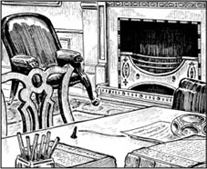
'There's a little cut on my new writing table.'
SOAMES
No, nobody.
HOLMES
Where is Bannister now?
SOAMES
When I ran out, to find you, Mr Holmes, he was on the chair in my room. He looked very ill.
HOLMES
Did you leave your door open?
SOAMES
Yes, but I locked the papers up first.
HOLMES
Come, then. We must go to your rooms.
The three men leave the room.
SCENE 2
Holmes visits the college
Soames, Holmes and Watson come into Soames's living room. Holmes walks to the window and looks out.
SOAMES
That window does not open, Mr Holmes. Nobody can enter the room through there.
Holmes smiles but says nothing for a minute.
HOLMES
Your servant isn't here now. Perhaps he's feeling better. Which chair did you leave him on?
SOAMES
The chair by the window.
HOLMES
Near this little table, yes? (He thinks for a minute.) Yes – yes, of course. The man comes in. He takes the three papers from the writing table to carry them across to the window, because... because then he can see you when you come across the garden to the front door, Soames!
SOAMES
But he didn't see me, because I walked in through the back door.
HOLMES
Ah, that helps! Can I see the three papers now?
Soames opens a box with a key and takes out the papers. Watson moves near Holmes to get a look.
HOLMES
(Looking at the first paper) He carries this first paper across to the table near the window and begins to copy it. It takes him – ten minutes?
WATSON
Fifteen, I think.
HOLMES
All right, fifteen. Then he puts it down on the floor, gets the next paper, and begins to copy that. Then he hears you coming in the back door, Mr Soames. He must be quick! He leaves the second paper on the table next to the window, and runs – where? Did you hear him running upstairs?
SOAMES
No, I didn't.
HOLMES
(Looking closely at the table) He's writing quickly, because he breaks his pencil and needs to sharpen it again. This is interesting. The pencil was long, and dark blue. Look at these pieces. And do you see the gold letter 'NN'? It's at the end of a word. Do you know Johann Faber pencils?
WATSON
I do, Holmes. I write with them.
Holmes walks across to the big writing table and takes the small piece of black mud from it.
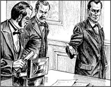
'Can I see the three papers now?'
HOLMES
This is the piece of black mud? (He looks closely
at the writing table.) I can see the cut. (He looks across at the door.) What is that door?
SOAMES
It opens into my bedroom.
HOLMES
Did you go into your bedroom before you ran out to find me?
SOAMES
No.
Holmes opens the bedroom door, and looks under the bed. Then he sees the curtain.
HOLMES
A man can hide behind this curtain.
He pulls the curtain back quickly. Behind it are Soames's coats and suits. Then Holmes sees something on the floor, under the curtain.
HOLMES
What's this? It's some mud again. Your visitor was in this room, Mr Soames.
SOAMES
But – why?
HOLMES
Think for a minute. He hears you coming. What can he do? He must hide! So he runs into your bedroom and hides behind this curtain.
SOAMES
Oh! Then he was in here when Bannister and I were in the next room!
HOLMES
Yes, that's right. Tell me, how many students live upstairs and go past your door?
SOAMES
Three, all taking this examination.
HOLMES
Who are they?
SOAMES
There is Gilchrist. He plays football, and likes running. His father was Sir Jabez Gilchrist. He was a rich man, but he gambled his money away. Young Gilchrist hadn't much money, but he works hard.
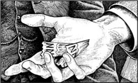
'Do you see the gold letter "NN" ?'
HOLMES
And the Indian student?
SOAMES
Yes, Daulat Ras is a quiet young man, but he works well. Then there is Miles McLaren, a very clever young man. But he doesn't study much and he's worried about this examination.
HOLMES
So he would like to see the papers first.
SOAMES
Well... yes, perhaps.
HOLMES
Can we speak to Bannister, your servant?
SCENE 3
Some questions for Bannister
In Soames's living room. Holmes, Watson and Soames are sitting in chairs. Holmes is sitting at the writing table. Bannister is standing in front of him.
HOLMES
Your key was in the door of this room today, Bannister. Is that right?
BANNISTER
Yes, sir. I don't usually leave it there, but–
HOLMES
Tell me, when did you come into the room?
BANNISTER
About 4.30 p.m., sir. With Mr Soames's tea. But he wasn't here.
HOLMES
Did you look at the papers on the table?
BANNISTER
No, sir!

'A man can hide behind this curtain.'
HOLMES
Why did you leave the key in the door?
BANNISTER
The tea things were in my hands. I thought, 'I can come back for the key.'
WATSON
Did you forget to come back?
BANNISTER
Yes, sir.
HOLMES
So the room was open all the time. And somebody in the room could get in or out?
BANNISTER
Yes – yes, sir.
HOLMES
When Mr Soames talked to you about the papers, you began to feel ill. So you sat down on the chair over there. Why did you go past the other chairs?
BANNISTER
I – I don't know, sir.
HOLMES
Did you stay here when Mr Soames ran out?
BANNISTER
Only for a minute or two. Then I locked the door and went to my room.
HOLMES
(To Soames) Mr Soames, I would like to visit the three young gentlemen. Is that all right?
SOAMES
Yes, of course. These rooms are very old, and very interesting. Visitors often go to look at them.
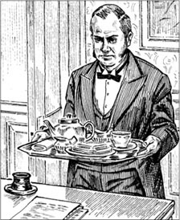
Mr Soames's tea.
SCENE 4
Gilchrist
Holmes, Soames and Watson are outside the door of Gilchrist's room. They are looking at the doorway.
HOLMES
(Quietly) Remember, gentlemen, you do not have a pencil with you. (The door opens.)
GILCHRIST
What are you—? Oh, it's you, Mr Soames.
SOAMES
Gilchrist, this is Mr Holmes and his friend. They are looking at the building.
HOLMES
Have you got a pencil, Watson? This is a most interesting doorway, and I want to draw it.
He takes some paper from his coat pocket.
WATSON
Oh, no. I'm sorry, Holmes.
HOLMES
(To Gilchrist) Have you, Mr Gilchrist?
GILCHRIST
A pencil? Oh, yes. (He goes away and comes back with a pencil.) There you are, Mr Holmes. It is a beautiful building.
HOLMES
Ah, thank you. (He looks closely at the pencil, then draws on the paper for a minute or two.) Yes, Mr Gilchrist, a beautiful building.
SCENE 5
Daulat Ras
Holmes, Watson and Soames are in Daulat Ras's room. The Indian is walking up and down the room. He looks worried. Holmes is drawing on a piece of paper.
HOLMES
A very interesting room, Soames. (He gives thepencil to Daulat Ras.) Thank you, Mr Ras. (And after a pause) Are you... worried about something?
RAS
Sorry, what did you say? Worried? Oh, yes. It's the – the examination.
HOLMES
Is that all?
RAS
Yes, of course. What—?
HOLMES
Good evening, Mr Ras.
Holmes, Watson and Soames leave the room.
SCENE 6
Miles McLaren
Holmes, Watson and Soames are outside the door of Miles McLaren's room.
MCLAREN
(From inside the room) Go away! I'm busy! I can't see anybody. Go away at once!
SOAMES
McLaren! This is Mr—
MCLAREN
(From inside the room) Go away! It's the examination tomorrow. I must study!
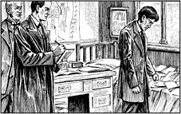
'Are you... worried about something?'
HOLMES
Come, my friends. It is not important.
SOAMES
I'm sorry. Mr Holmes. But—
HOLMES
(Walking away) Is he a tall young man?
SOAMES
Tall? No, McLaren isn't tall. Gilchrist is the tallest of the three.
HOLMES
Good. And now, Mr Soames, good night.
SOAMES
What! Are you going? But tomorrow is the examination! What can I do? How—?
HOLMES
I'm going to take the pieces of pencil and the mud with me. Don't worry. I'm going to come back tomorrow morning with the answer.
SCENE 7
Holmes is thinking
Holmes's room. He and Watson are sitting in chairs.
HOLMES
What do you think, Watson? Who began to copy the papers?
WATSON
McLaren. He said, 'Go away!' But did he want to hide something? Or perhaps... the student from India? Mr Ras? He looked very worried.
HOLMES
Many people are worried before an examination, Watson. It is nothing. And the pencil was no help to us. (He thinks for a minute.) What about Soames's servant?
WATSON
Bannister? He's an honest man, Soames says. That's true, I think.
HOLMES
Yes. So why did an honest man...? Oh dear, I must think. Where's my pipe, Watson?
SCENE 8
All the answers to all the questions
Soames's room. It is morning. A very worried Soames is bringing Holmes and Watson into the room.
SOAMES
Well, Mr Holmes? Can we have the examination later this morning, or must I stop it?
HOLMES
You can have the examination, Mr Soames.
SOAMES
But the young man—
HOLMES
He isn't going to take it.
SOAMES
You know him?
HOLMES
Yes, I do. Please call Bannister.
Soames leaves the room.
WATSON
You have the answer, Holmes?
HOLMES
Yes, my dear Watson. Look. (He opens his hand. In it are three pieces of black mud.)
WATSON
Three! There were only two pieces of mud yesterday. Where did the third piece come from?
Soames comes back into the room with Bannister.
HOLMES
Now Bannister, I want the true story. What happened yesterday?
BANNISTER
(Worried) I told you everything, sir.
HOLMES
You have nothing more to say? Then I must tell you. When Mr Soames called you into the room yesterday, you saw something on that chair, and you sat on it before Mr Soames could see it.
BANNISTER
No, sir!
HOLMES
Yes! And when Mr Soames went out, to find me, you opened the door and said, 'You can come out now,' to the man hiding behind the curtain.
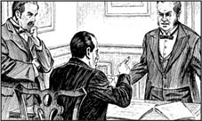
'I told you everything, sir.'
BANNISTER
(Looking afraid) There was no man, sir.
HOLMES
That isn't true. But please go and stand next to the bedroom door. (He looks at Soames.) Soames, please go and ask young Gilchrist to come down.
Soames leaves, and comes back with Gilchrist. Gilchrist looks worried when he sees Bannister.
HOLMES
Mr Gilchrist, there are only the five of us to hear your answer to my question. Why did you copy the examination papers yesterday?
Gilchrist looks at Bannister, afraid.
BANNISTER
No, Mr Gilchrist, sir! I never said anything!
HOLMES
No, but you are helping us now, Bannister. (To Gilchrist) Tell us, Mr Gilchrist.
Gilchrist suddenly begins to cry. Holmes goes across and puts a hand on the young man's arm.
HOLMES
You did something very wrong, Gilchrist, but you're sorry now, I can see that. I'm going to tell you the story, Soames. Mr Gilchrist first saw the papers through the window.
SOAMES
But nobody can get in through the window!
HOLMES
That's true, but a very tall man can look through it from the garden. (He looks at the writing table.) I could not understand this cut, but then I remembered. Gilchrist likes running!
WATSON
But... how does that help, Holmes?
HOLMES
Think, Watson! This young man went running yesterday afternoon. When he walked home, his running shoes were in his hands...
WATSON
And running shoes have spikes! Of course!
HOLMES
Yes. Gilchrist went past his window and looked in – he's a tall young man, you see? He saw the exam papers on the writing table. Then he went past Soames's door – and saw the key in it.
WATSON
And he went into the room and put his shoes on the writing table, and a spike cut into it.
HOLMES
Yes, Watson. (To Gilchrist) What did you put on that chair near the window?
GILCHRIST
My watch.
HOLMES
(To Soames) He puts his watch on the chair, then begins to copy one of the papers. 'I'm going to see Mr Soames when he comes back across the garden,' he thinks. But you walk in through the back door, Soames.
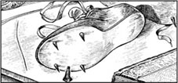
'Gilchrist put his shoes on the writing table.'
SOAMES
Then what?
HOLMES
Gilchrist hears you coming, quickly takes his running shoes, and runs into your bedroom to hide. One shoe leaves some black mud behind the curtain. Is this all true, Mr Gilchrist? I found the same black mud on your shoes.
GILCHRIST
Yes, sir, it's true.
SOAMES
(Angrily) Have you nothing more to say?
GILCHRIST
I – I have a letter here, Mr Soames. Early this morning, I began to write to you... (He takes a letter from his pocket.) It says, 'I'm not going to take the examination. I'm going to South Africa to work for the police there.'
SOAMES
I see. You're not going to take the examination now. I'm pleased to hear that.
GILCHRIST
Mr Bannister talked to me. This is the right thing to do. I understand that now.
HOLMES
Gilchrist was in the bedroom, Bannister, and you didn't tell Mr Soames. When you saw Gilchrist's watch, you sat on it to hide it. Why?
BANNISTER
Well, sir, I was once a servant to Sir Jabez Gilchrist, this young gentleman's father.
HOLMES
Ah!
BANNISTER
When he gambled his money away, I moved to the college to be a servant, but I always remembered Sir Jabez. He was good to me. So I did everything to help his son here.
HOLMES
And yesterday...?
BANNISTER
When Mr Soames called me yesterday, I saw Mr Gilchrist's watch on the chair. 'He looked at the examination papers!' I thought, and I quickly sat down on the watch before Mr Soames saw it.
HOLMES
Then Mr Soames visited me.
BANNISTER
Yes, sir, and I called young Mr Gilchrist. 'You looked at the exam papers,' I said to him. 'Did you copy them?' 'Yes,' he said. 'I did.' 'Then you cannot take the exam,' I said. 'Think of your father! He was an honest man, and you must be honest too.' I wanted to stop him, Mr Holmes.
HOLMES
You were right, Bannister. Well, Soames, you have your answers now. (To Gilchrist) And you, young man, did wrong, but you're going to put things right. You can thank Bannister for that.
GILCHRIST
I do thank him, sir.
HOLMES
Come, Watson. Our work is finished here.
WATSON
Yes, Holmes.
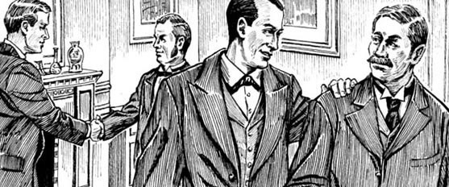
'Our work is finished here.'
examiner n. the person who checks the answers of an examination 考官
servant n. someone who works in another person's house, cooking or cleaning 仆人
piece n. not all of something, a small part of it 碎片
sharpen (a pencil) v. cut it, to make it easy to write with 削尖（铅笔）
hide v. get into a place where you cannot be seen 躲藏
gamble away lose money by betting on horses or games 赌输掉
三个学生
三个学生
内容简介
一所大学的学生们很快要考试了，可他们当中的某些人是不是已经看到考题了呢？
剧中人物
歇洛克·福尔摩斯
华生医生
希尔顿·索姆斯——圣路加学院的教师
班尼斯特——学院的仆人
吉尔克里斯特——学生
道拉特·拉斯——学生
迈尔斯·麦克拉伦——学生
表演须知
第一场：一个房间，摆有一张桌子和几把椅子
第二场：索姆斯的客厅，摆有一张书桌和几把椅子。窗口附近摆有一张小桌。一扇门通往卧室。床边挂着一道长长的帘子。
第三场：索姆斯的客厅。
第四场：吉尔克里斯特的房间门外。
第五场：道拉特·拉斯的房间。
第六场：迈尔斯·麦克拉伦的房间门外。
第七场：同第一场。
第八场：索姆斯的客厅。
需要的道具：一个烟斗、一些书、几支钢笔、纸张、几张考试卷、三个小泥团、铅笔屑和一封信。
第一场
希尔顿·索姆斯的故事
歇洛克·福尔摩斯坐在桌旁写东西。时近傍晚，华生与希尔顿·索姆斯一起走了进来。
福尔摩斯：
（头也不抬）谁在门口，华生？
华生：
这位是希尔顿·索姆斯先生，福尔摩斯，他在圣路加学院任教。（福尔摩斯抬起头来。）
索姆斯：
能占用您一点时间吗，福尔摩斯先生？今天学院里发生了一件事，我非常担心。于是我想：“大侦探福尔摩斯先生正造访我们镇。也许他能帮忙！”我就——
福尔摩斯：
我有很多事情要忙，索姆斯先生，也许警方——
索姆斯：
不，不，我不能报警！
福尔摩斯：
好吧，跟我说说是什么事，索姆斯先生。
华生坐下来，但索姆斯依旧站着。
索姆斯：
明天是一场重要考试的第一天，我是考官之一。今天三点的时候，三张考卷送到我这里审阅。当然，每个学生肯定都想在考试前看到这些卷子！
福尔摩斯：
（大笑）那是当然！
索姆斯：
我们一直都非常小心地保管试卷。我开始审读，但是下午四点半的时候，我去一个朋友家喝茶了。
福尔摩斯：
你把试卷放在哪儿了呢？
索姆斯：
放在我的书桌上。我锁上门，离开了大约一个小时。我回到家的时候，发现门上插着一把钥匙。“这是我的钥匙吗？”我想，“不是啊，我的在口袋里呢。啊，是班尼斯特的。”班尼斯特是我的仆人。
华生：
他为什么今天下午要去您的房间？
索姆斯：
他每天下午都给我送茶来。
福尔摩斯：
可你去朋友家了。他不记得这事吗？
索姆斯：
是的，所以他的钥匙在我的门上。他一向都很谨慎的，可——
福尔摩斯：
跟我说说试卷的情况。你回到房间的时候，卷子都在什么位置？
索姆斯：
一张在窗边的小桌上，一张在地上，还有一张在书桌上。
福尔摩斯：
（突然来了兴致的样子）第一张在地上，第二张在窗边，第三张在书桌上。
索姆斯：
（一下子张大了嘴）没错！您怎么知道的？
福尔摩斯：
（微笑着）请你接着给我们讲你有趣的经历，索姆斯先生。
索姆斯：
一开始，我想：“是不是班尼斯特看了卷子？”于是我就问了他，可他说：“没有，我没看。”他一向诚实，福尔摩斯先生。
福尔摩斯：
接着发生了什么？
索姆斯：
我跟班尼斯特说了试卷的事，他突然感觉不舒服。他坐到一把椅子上，我给他喝了杯烈酒。然后我仔细察看了靠窗的桌子。
华生：
您发现了什么？
索姆斯：
一些铅笔屑。
福尔摩斯：
有人折断了笔芯，所以削了铅笔？
索姆斯：
是的，也许吧。对，就是这样。
福尔摩斯：
好！这是有用的线索！
索姆斯：
还有两点。我的书桌是新的，可是现在桌面上却有了一道小划痕，另外，桌上还有一小块黑泥。
福尔摩斯：
就这些？
索姆斯：
是的。请您帮帮我，福尔摩斯先生！
福尔摩斯站起来，开始穿大衣。华生也拿起大衣穿上。
福尔摩斯：
这是个有趣的故事，索姆斯先生。告诉我，今天下午试卷送到以后，有没有哪个学生来过您的房间？
索姆斯：
有，道拉特·拉斯，一个印度学生。
福尔摩斯：
当时试卷就放在你的书桌上吗？
索姆斯：
是的，不过他没法看清楚。他离卷子有两三米远。
福尔摩斯：
可那些是试卷。他能看出这一点吗？
索姆斯：
有可能。
福尔摩斯：
试卷在你的房间里。有谁知道这事吗？班尼斯特知道吗？
索姆斯：
不，谁也不知道。
福尔摩斯：
班尼斯特现在在哪儿？
索姆斯：
我冲出来找您的时候，福尔摩斯先生，他还坐在我房间的椅子上。他看起来非常不舒服。
福尔摩斯：
你没有锁门吗？
索姆斯：
是的，但我先把试卷锁起来了。
福尔摩斯：
那么走吧，我们得去你家看看。
三人离开了房间。
第二场
福尔摩斯到访学院
索姆斯、福尔摩斯和华生走进索姆斯的客厅。福尔摩斯走到窗边向外张望。
索姆斯：
那扇窗户通常不开，福尔摩斯先生。没人能从那里进来。
福尔摩斯笑了，停顿了片刻才开口。
福尔摩斯：
你的仆人这会儿不在了，也许他觉得好些了。你出门时他坐在哪把椅子上？
索姆斯：
靠窗的那把。
福尔摩斯：
就在这张小桌边上，是吗？（他沉思片刻。）是了——是了，当然是这样。那个人进来，从书桌上拿了三张试卷走到窗边，因为……因为当你穿过花园来到前门的时候，他就能看到你，索姆斯！
索姆斯：
可是他没看到我，因为我是从后门进来的。
福尔摩斯：
啊，这一点很有用！现在我能看看那三张卷子吗？
索姆斯用钥匙打开一个盒子拿出了试卷。华生走到福尔摩斯身旁去看试卷。
福尔摩斯：
（看着第一张试卷）他把这张卷子拿到窗前的桌子上，然后开始抄写。这用了他——十分钟？
华生：
我觉得要一刻钟。
福尔摩斯：
好吧，那就十五分钟。然后他把这张试卷丢在地上，拿了下一张卷子开始抄。这时他听到你从后门进来，索姆斯先生。他得赶快撤！他把第二张试卷留在窗边的桌子上，跑了。——跑到哪儿了呢？你有没有听到他跑上楼去？
索姆斯：
没有。
福尔摩斯：
（仔细察看着桌子）他写得很快，因为他折断了笔芯，只得重新削铅笔。这很有意思。这支铅笔很长，深蓝色的。看看这些铅笔屑。你注意到金色的字母“NN”了吗？这是一个单词的末尾。你知道Johann Faber牌铅笔吗？
华生：
我知道，福尔摩斯。我就用这个牌子的铅笔。
福尔摩斯走到大书桌旁，从桌上拿起了那一小块黑泥。
福尔摩斯：
这就是那一小团黑泥吧？（他仔细地察看着书桌。）我能看到那道划痕。（他看向那扇门。）那是什么门？
索姆斯：
那扇门通往我的卧室。
福尔摩斯：
你跑出去找我之前有没有去卧室？
索姆斯：
没有。
福尔摩斯打开卧室的门，看了看床下。后来，他留意到了那道帘子。
福尔摩斯：
这帘子后面可以藏一个人呢。
他一把拉开了帘子，后面挂着索姆斯的大衣和衣服。这时，福尔摩斯在地上看到了什么东西，就在帘子后面。
福尔摩斯：
这是什么？又是一块泥。您的不速之客当时在这个房间里，索姆斯先生。
索姆斯：
可是——为什么呢？
福尔摩斯：
你稍微想一下。他听到你回来了，他能怎么办呢？他得藏起来！所以他冲进了你的卧室，躲在这道帘子后面。
索姆斯：
啊！那么说我和班尼斯特在隔壁房间的时候，他就在这儿！
福尔摩斯：
是的，说得没错。告诉我，住在你楼上而且得从你的门口经过的学生有几个。
索姆斯：
三个，而且都要参加这次考试。
福尔摩斯：
他们都是谁呢？
索姆斯：
有吉尔克里斯特。他踢足球，喜欢跑步。他父亲是杰贝兹·吉尔克里斯特爵士，曾经很富有，但是却把家产赌得一干二净。年轻的吉尔克里斯特没什么钱，但他学习用功。
福尔摩斯：
那个印度学生呢？
索姆斯：
嗯，道拉特·拉斯这个小伙子话不多，但他学习不错。还有迈尔斯·麦克拉伦，非常聪明的年轻人，可是他不怎么学习，也很担心这次考试。
福尔摩斯：
所以他会想要先看看试卷喽。
索姆斯：
这个……是的，有可能。
福尔摩斯：
我们能跟您的仆人班尼斯特谈谈吗？
第三场
盘问班尼斯特
索姆斯的客厅里，福尔摩斯、华生和索姆斯坐在椅子上。福尔摩斯坐在书桌旁，班尼斯特站在他面前。
福尔摩斯：
班尼斯特，今天你的钥匙插在这个房间的门上，是这样吗？
班尼斯特：
是的，先生。我通常都不会把钥匙忘在门上的，可是——
福尔摩斯：
告诉我，你是什么时间进来的呢？
班尼斯特：
大概四点半，先生。我端了索姆斯先生的茶来，可他没在这儿。
福尔摩斯：
你有没有看桌上的试卷？
班尼斯特：
没有，先生！
福尔摩斯：
你为什么会把钥匙留在门上呢？
班尼斯特：
我手上端着茶具，于是我想：“我可以回来再拿钥匙。”
华生：
你忘记回来了吗？
班尼斯特：
是的，先生。
福尔摩斯：
所以房门一直都是开着的，屋里的人就可以随意进出了吧？
班尼斯特：
是的——是的，先生。
福尔摩斯：
索姆斯先生跟你说试卷的事时，你开始觉得不舒服。于是你就坐到了那边的椅子上。你为什么要走过其他几把椅子去坐那儿呢？
班尼斯特：
我——我不知道，先生。
福尔摩斯：
索姆斯先生出去以后，你一直待在这儿吗？
班尼斯特：
只待了一两分钟，然后我就锁上门回自己房间去了。
福尔摩斯：
（对索姆斯）索姆斯先生，我想去见见那三位年轻人，可以吗？
索姆斯：
可以，当然可以。这些房间非常古老，也很有特色，经常会有人来参观。
第四场
吉尔克里斯特
福尔摩斯、索姆斯和华生在吉尔克里斯特的房门外。他们看着门道。
福尔摩斯：
（小声说）记住，先生们，你们身上都没有带铅笔。（门开了。）
吉尔克里斯特：
你们在——啊，是您啊，索姆斯先生。
索姆斯：
吉尔克里斯特，这位是福尔摩斯先生，这是他的朋友。他们来参观这座楼。
福尔摩斯：
你有铅笔吗，华生？这是个非常特别的门道，我想把它画下来。
他从大衣口袋里掏出几张纸。
华生：
啊，我没带笔，不好意思，福尔摩斯。
福尔摩斯：
（对吉尔克里斯特）你有吗，吉尔克里斯特先生？
吉尔克里斯特：
铅笔吗？啊，我有。（他走开拿回来一支铅笔。）给您，福尔摩斯先生。这确实是座美丽的建筑。
福尔摩斯：
啊，谢谢。（他仔细看了看铅笔，然后在纸上画了一两分钟。）是的，吉尔克里斯特先生，这楼很漂亮。
第五场
道拉特·拉斯
福尔摩斯、华生和索姆斯在道拉特·拉斯的房间里。这个印度人正在屋里走来走去，看上去十分焦虑。福尔摩斯正在一张纸上画着什么。
福尔摩斯：
这个房间非常特别，索姆斯。（他把铅笔递给道拉特·拉斯。）谢谢你，拉斯先生。（停顿了一下）你……是在担心什么吗？
拉斯：
不好意思，您刚才说什么？担心？啊，是的，是考——考试。
福尔摩斯：
就只是这件事？
拉斯：
是啊，当然了。有什么——？
福尔摩斯：
再会，拉斯先生。
福尔摩斯、华生和索姆斯离开了房间。
第六场
迈尔斯·麦克拉伦
福尔摩斯、华生和索姆斯站在迈尔斯·麦克拉伦的房门外。
麦克拉伦：
（从房间里传出声音）走开！我忙着呢！我谁也不见！快走开！
索姆斯：
麦克拉伦，这位是——
麦克拉伦：
（从房间里传出声音）走开，明天有考试，我得学习！
福尔摩斯：
算啦，朋友们。这没什么关系。
索姆斯：
很抱歉，福尔摩斯先生。可是——
福尔摩斯：
（往外走）小伙子是个高个子吗？
索姆斯：
高？不，麦克拉伦不怎么高。吉尔克里斯特是三个人当中最高的。
福尔摩斯：
好的。那么，索姆斯先生，晚安。
索姆斯：
什么？您要走了吗？可是明天就要考试了！我怎么办？怎——？
福尔摩斯：
我要把这些铅笔碎屑和泥团带走。别担心，明天早上我会带着答案回来的。
第七场
福尔摩斯思考案情
福尔摩斯的房间。他和华生坐在椅子上。
福尔摩斯：
你怎么看，华生？谁最像抄卷子的人？
华生：
麦克拉伦。他说：“走开！”这难道不是他想隐藏什么吗？或许也有可能……是那个印度来的学生？拉斯先生？他看起来忧心忡忡的。
福尔摩斯：
考试前很多人都会有些焦虑，华生。这没什么。而铅笔并没有帮上什么忙。（他想了一下。）你怎么看索姆斯的仆人？
华生：
班尼斯特？他是个老实人，索姆斯说的。我觉得这话属实。
福尔摩斯：
是的。可为什么一个老实人……？哎呀，我一定得好好想想。我的烟斗哪儿去了，华生？
第八场
真相大白
索姆斯的房间，时间是早上。满怀焦虑的索姆斯将福尔摩斯和华生领进房间。
索姆斯：
怎么样，福尔摩斯先生？今天上午晚些时候我们能举行考试吗？还是我必须取消考试？
福尔摩斯：
你们可以举行考试，索姆斯先生。
索姆斯：
可是那个年轻人——
福尔摩斯：
他不会参加考试了。
索姆斯：
您知道他是谁了？
福尔摩斯：
是的。请把班尼斯特叫来。
索姆斯离开了房间。
华生：
你有答案了，福尔摩斯？
福尔摩斯：
是的，我亲爱的华生。瞧。（他摊开手掌，手里有三块黑泥。）
华生：
三块！昨天只有两块啊。第三块是哪儿来的？
索姆斯带着班尼斯特回到了房间里。
福尔摩斯：
好吧，班尼斯特，我想听实话。昨天发生了什么事情？
班尼斯特：
（神情焦虑）我都跟您说过了，先生。
福尔摩斯：
你没有其他什么可以说的了吗？那我得跟你说说了。昨天索姆斯先生把你叫进房间的时候，你看到那张椅子上有东西，于是你在索姆斯先生看到之前坐了上去。
班尼斯特：
不是的，先生！
福尔摩斯：
就是这样的！索姆斯先生出去找我以后，你打开门，对藏在帘子后面的人说：“你现在可以出来了。”
班尼斯特：
（满脸惊恐）那儿没有人，先生。
福尔摩斯：
根本不是这样。不过，请你走过去站在卧室的门边。（他看着索姆斯。）索姆斯，请你去叫吉尔克里斯特那个小伙子下来。
索姆斯离开了，带着吉尔克里斯特回来。吉尔克里斯特看到班尼斯特后露出了焦虑的神色。
福尔摩斯：
吉尔克里斯特先生，现在只有我们五个人在场听你回答我的问题。昨天你为什么要抄试卷？
吉尔克里斯特惊恐地看着班尼斯特。
班尼斯特：
不，吉尔克里斯特先生，先生！我什么都没有说！
福尔摩斯：
你是没说，不过你现在可帮了我们的忙啦，班尼斯特。（对吉尔克里斯特）告诉我们吧，吉尔克里斯特先生。
吉尔克里斯特突然哭了起来。福尔摩斯走过去把手放在了这个年轻人的手臂上。
福尔摩斯：
你做了一件非常不应该的事情，吉尔克里斯特，不过你现在感到后悔了，我能看出来。我准备跟你讲讲事情的来龙去脉，索姆斯。吉尔克里斯特先生一开始是透过窗子看到了试卷。
索姆斯：
可是没人能从那扇窗户进来！
福尔摩斯：
确实如此，但是大高个可以从花园里透过窗户看进来。（他看了看书桌。）我当时想不通这道划痕是怎么来的，可是后来我想起来了。吉尔克里斯特喜欢跑步！
华生：
可……这有什么用呢，福尔摩斯？
福尔摩斯：
动动脑子，华生！这位年轻人昨天下午去跑步了。他往家走的时候，跑鞋就拎在手里……
华生：
而跑鞋上当然是有鞋钉的！
福尔摩斯：
是的。吉尔克里斯特经过这扇窗户，往里面看了看——小伙子是个高个儿，你明白了吧？他看见了书桌上的试卷。然后他路过索姆斯的门口，发现钥匙插在门上。
华生：
于是他进了屋，把鞋子放在了书桌上，鞋钉划伤了桌面。
福尔摩斯：
是的，华生。（对吉尔克里斯特）你把什么东西放在了靠窗的那把椅子上？
吉尔克里斯特：
我的手表。
福尔摩斯：
（对索姆斯）他把手表放在了那把椅子上，然后开始抄其中一张试卷。“索姆斯先生穿过花园回来的时候，我会看到他的。”他想。可是你是从后门进来的，索姆斯先生。
索姆斯：
然后怎么样了呢？
福尔摩斯：
吉尔克里斯特听到你来了，赶紧拿起跑鞋，冲进你的卧室藏了起来。一只鞋在帘子后面留下了一块黑泥。是这样吧，吉尔克里斯特先生？我在你的鞋上找到了同样的黑泥。
吉尔克里斯特：
是的，先生，是这样。
索姆斯：
（生气地）你还有什么要说的吗？
吉尔克里斯特：
我——我这儿有封信，索姆斯先生。今天一大早我就动笔给您写了这封信……（他从口袋里掏出一封信。）信是这么写的：“我不准备参加考试了，我要去南非为那里的警方工作。”
索姆斯：
我明白了，你现在不打算参加考试了。我很高兴听你这么说。
吉尔克里斯特：
班尼斯特先生跟我谈过，这才是正确的做法。现在我明白了。
福尔摩斯：
吉尔克里斯特当时在卧室里，班尼斯特，而你没有告诉索姆斯先生。你看到吉尔克里斯特的手表时，你坐在上面盖住了它。为什么呢？
班尼斯特：
哦，先生，我曾经是这位年轻人的父亲杰贝兹·吉尔克里斯特爵士的仆人。
福尔摩斯：
啊！
班尼斯特：
他赌光了所有的钱以后，我去了学院当仆人，可我一直都记挂着杰贝兹爵士。他对我很好，所以在这里我尽一切力量来帮助他的儿子。
福尔摩斯：
那么昨天……
班尼斯特：
昨天索姆斯先生叫我来的时候，我看到吉尔克里斯特先生的手表放在椅子上。“他偷看了试卷！”我想，于是趁着索姆斯先生还没发现，我赶紧坐在了那块表上。
福尔摩斯：
后来索姆斯先生就去找我了。
班尼斯特：
是的，先生。于是我就把小吉尔克里斯特先生叫出来。“你看了试卷，”我对他说，“你有没有抄呢？”“有，”他说，“我抄了。”“那你就不能参加考试了。”我说，“想想你父亲！他是个诚实的人，你也要诚实才对。”我希望能够阻止他，福尔摩斯先生。
福尔摩斯：
你做得没错，班尼斯特。那么，索姆斯先生，你现在得到答案了。（对吉尔克里斯特）而你呢，年轻人，做了错事，但你准备改正错误。你得谢谢班尼斯特。
吉尔克里斯特：
我确实很感谢他，先生。
福尔摩斯：
走吧，华生。我们的活儿干完了。
华生：
好的，福尔摩斯。
ACTIVITIES: Before Reading
ACTIVITIES
Before Reading
1 Read the back cover of the book, and the story introduction. How much do you know now about Sherlock Holmes? Choose words to complete these sentences.
1) He was born before / after 1900.
2) He lives in Bath / London.
3) He is a great doctor / detective and he knows it.
4) He always / sometimes helps the police.
5) He smokes a pipe / cigarette when he is thinking.
6) His friend / brother helps him to solve problems.
7) He is nice to everybody / a very clever man.
2 Which words do you think you will find in these plays? Put a tick next to them. Why won't you find all of them?
| tunnel | college | computer |
| gold | dollar | careful |
| tea | advertisement | pencil |
| supermarket | airport | running shoes |
| bank | table | key |
| hair | television | mud |
3 Use the clues below to complete this crossword with words from the back cover or the story introduction. Then find the hidden six-letter word in the crossword, and say what it means.
1) When the air is thick and wet; difficult to see anything.
2) A safe place to keep money.
3) Of someone who hates waiting.
4) All the people; all the countries.
5) Strange, different from normal.
6) To find the answer to a problem.
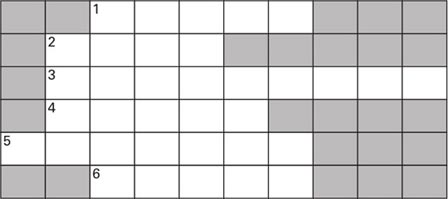
The hidden word is _____. It means __________.
4 What is going to happen in the plays? Can you guess? Tick one box for each sentence.
1) Someone loses an examination paper.
YES □／NO □
2) Sherlock Holmes shoots someone.
YES □／NO □
3) Someone tries to rob a bank.
YES □／NO □
4) Sherlock Holmes solves a murder.
YES □／NO □
5) Dr Watson marries his girlfriend.
YES □／NO □
ACTIVITIES: While Reading
ACTIVITIES
While Reading
1 Read The Red-Headed League. Who says these words in the play? Who are they talking to? And who or what are they talking about?
1) 'Really? Tell me about it.'
2) 'I can't remember when I saw a better head!'
3) 'It is strange, isn't it?'
4) 'When did he begin to work for you?'
5) 'Why did you ask about the Strand?'
6) 'It's all in these boxes. Lots and lots of it!'
2 Match these halves of sentences, and put them together using the words below.
and because but when
1) John Clay used the name Vincent Spaulding
2) Spaulding made a tunnel to the First Bank,
3) Sherlock Holmes knew about the tunnel
4) Duncan Ross tried to get away,
5) ... Wilson was away from the shop.
6) ... the police were ready for him at the front door.
7) ... got a job in Jabez Wilson's shop.
8) ... Spaulding's trousers were dirty.
3 Read The Three Students. Choose the best question-words for these questions, and then answer them.
What / Who / Why
1) ... did Mr Soames ask for Sherlock Holmes's help?
2) ... brought Mr Soames's tea in every afternoon?
3) ... did Holmes ask Gilchrist for?
4) ... was the tallest of the three students?
5) ... was Daulat Ras worried?
6) ... did Gilchrist leave behind the curtain?
7) ... did Gilchrist's letter to Soames say?
8) ... did Bannister want to help Gilchrist?
4 Read Scene 8, and choose the best words to complete the passage.
A student called Gilchrist saw the papers on the table / floor, and came into Soames's room through the window / door.
He put his pen / watch on the chair / desk, and took away / copied the paper. Suddenly he heard / saw Soames come in, and ran into the bathroom / bedroom to hide. Later, when Soames went out / came in, a servant / policeman called Bannister said to Gilchrist, 'You can come out now.' Gilchrist went quickly / slowly back to his room, so Soames didn't catch / hurt him.
But Sherlock Holmes asked about / knew the true story. When Sherlock Holmes began to talk / laugh about it, Gilchrist said he was sorry / pleased.
ACTIVITIES: After Reading
ACTIVITIES
After Reading
1 Perhaps this is what three of the characters in the plays are thinking. Which characters are they, and in which play? What is happening in the play at the moment?
1) 'Oh dear! I left the key in the door! I must be more careful next time. But wait a minute – what's that over there? Quick – I must do something to stop Mr Soames seeing it!'
2) 'Ah, it's Bannister's key. Did Bannister look at the papers? The famous detective is visiting our town. I'm pleased to hear that.'
3) 'That was so easy! Of course he wants to work only four hours a day for ￡4 a week! What a clever idea of John's! Tomorrow we can start work in the cellar.'
2 All these words come from The Red-Headed League. Put them in three groups, under these headings.
PEOPLE THINGS PLACES
advertisement, an American, bank, book, cellar, detective,
doctor, friend, hospital, letter, newspaper, office,
photographs, red hair, shop, strong-room, thief, trousers
3 Use the words below, and some of the words from your three lists, to complete this newspaper story.
floor, free, gave, locked, pleased, say, tunnel
Yesterday the police caught a dangerous _____ and killer, John Clay. Mr Jones, a Scotland Yard _____, told us: 'He wanted to rob the First _____, so he made a _____ from the_____ of a house nearby. But we knew about his plan, so we waited for him in the _____. When he came up through the_____, we caught him and his _____. We're very _____ to have John Clay safely _____ up. He isn't going to be _____ for a very long time! I want to _____ thank you to Sherlock Holmes – he _____ us a lot of help.'
4 Perhaps Dr Watson asked Sherlock Holmes some questions about solving the case of the three students. Match the answers to the questions and choose the right answer.
1) Who left the key in Soames's door?
2) Why did Bannister look ill when he was in Soames's room?
3) Why did the student copy the paper near the window?
4) Where did the third piece of mud come from?
5) He was worried about Gilchrist. / He felt ill.
6) Soames did. / Bannister did.
7) Gilchrist's running shoes. / Your trousers.
8) To see Soames coming home. / To read more easily.
5 Bannister had a talk with Gilchrist before Gilchrist wrote his letter to Soames (see SCENE 8). Write out their conversation in the correct order, and put in the speakers' names. Bannister speaks first (number 5).
1) _____ 'Yes. Did you copy the papers?'
2) _____ 'How do you know that?'
3) _____ 'Think of your father, sir! He was an honest man, and you must be honest too.'
4) _____ 'Do you? All right then, what is it?'
5) _____ 'I want to talk to you about something, sir.'
6) _____ 'Oh, I left it there, did I?'
7) _____ 'Sir, you can't take the exam now!'
8) _____ 'Yes, I must. All right. I'll write to Mr Soames.'
9) _____ 'You were in Mr Soames's room just now, sir.'
10) _____ 'Why not?'
11) _____ 'Well, I saw your watch on the chair, sir.'
12) _____ 'Yes, I did, Bannister.'
6 Here is Dr Watson, talking to a friend about Sherlock Holmes, but he says some untrue things. Can you correct them?
'Sherlock Holmes? Oh yes, he often wants me to solve crimes for him. I'm more intelligent than he is, of course. Sometimes he asks me to bring my dog with me, because there are some very dangerous animals in these cases. Come and visit us at our rooms in King Edward Street. I'm often at the office, but Holmes is usually at home.'
7 Here is a puzzle. The answer is a word from one of the plays, with seven letters. To find the word, choose the right letters (one from each sentence) and write them in the boxes.
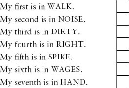
Jabez Wilson and Hilton Soames both feel like this at the beginning of each play. What is the word?
8 Which play did you like best? Can you explain why? Write a short review of one of the plays. Use these words to help you.
I liked / didn't like this play because...
... I liked the character of _____.
... there was a difficult problem to solve.
... nobody died.
... I like stories about this time in history.
... I like detective stories.
... it was exciting / nothing happened.
... it had a good ending.
封底
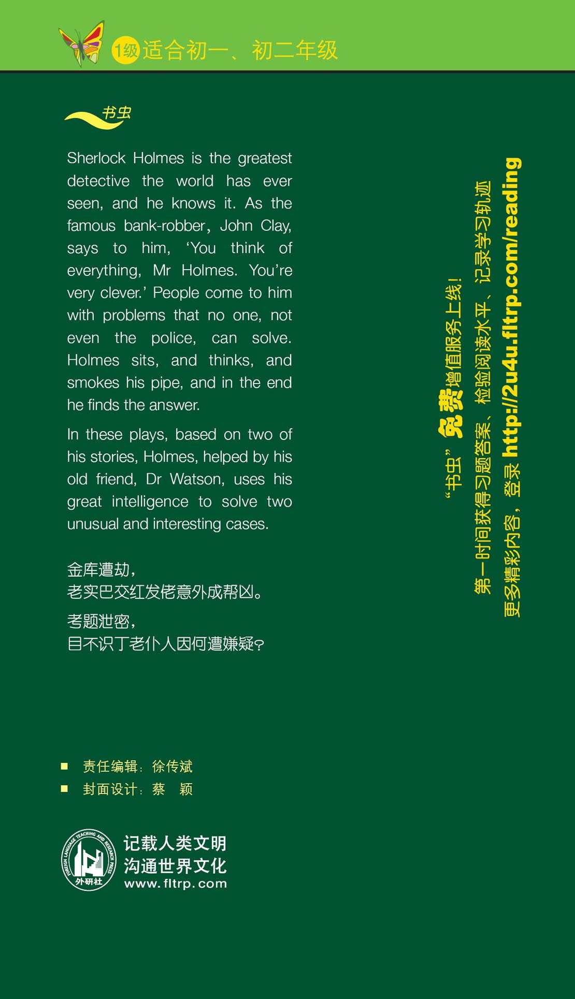